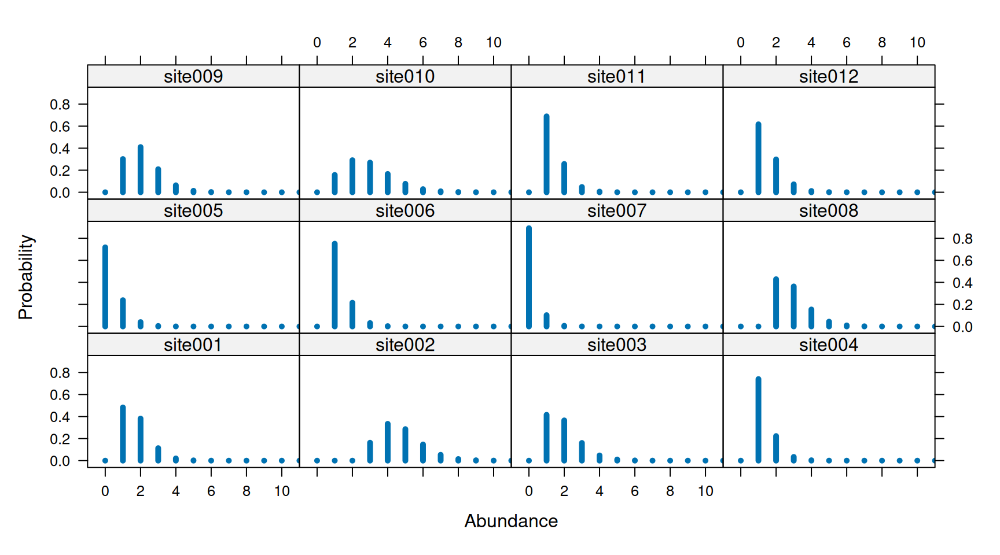
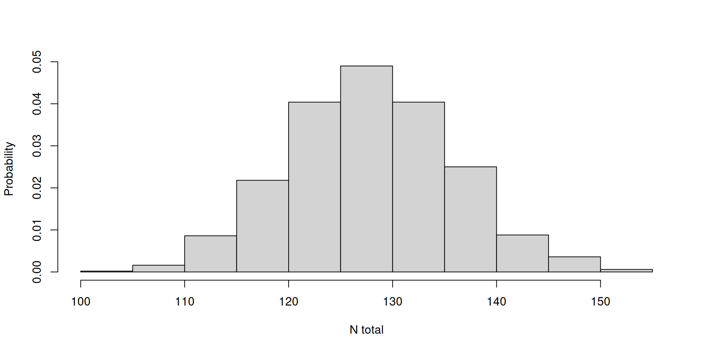
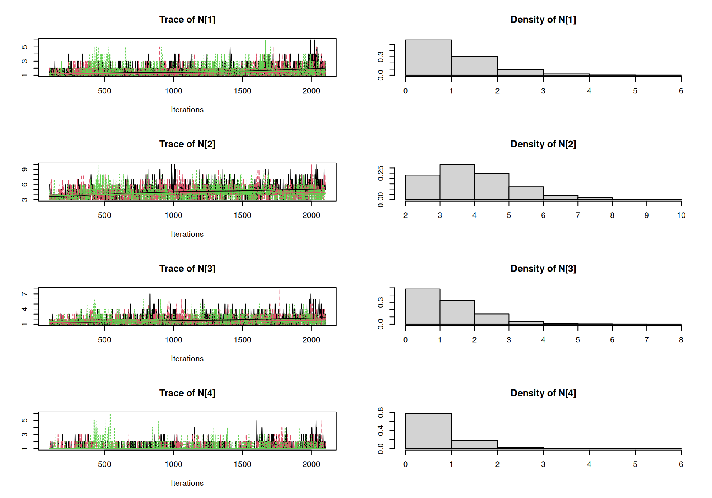
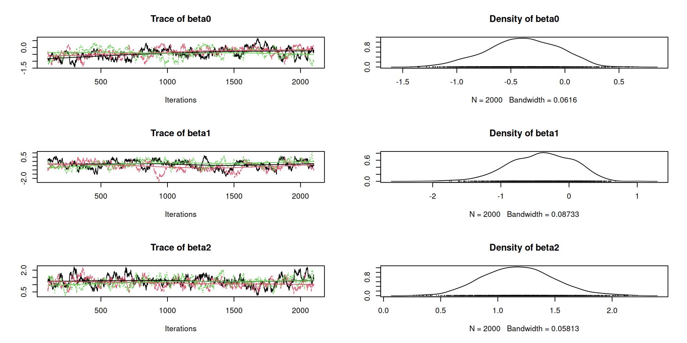
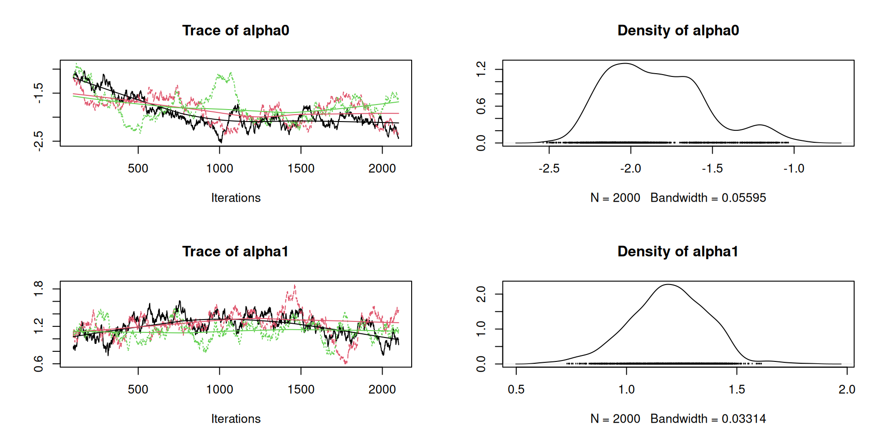
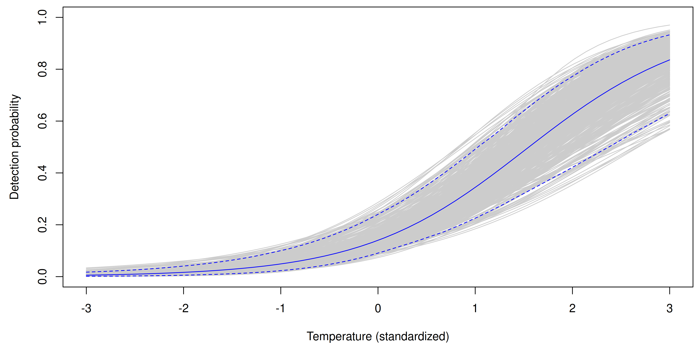
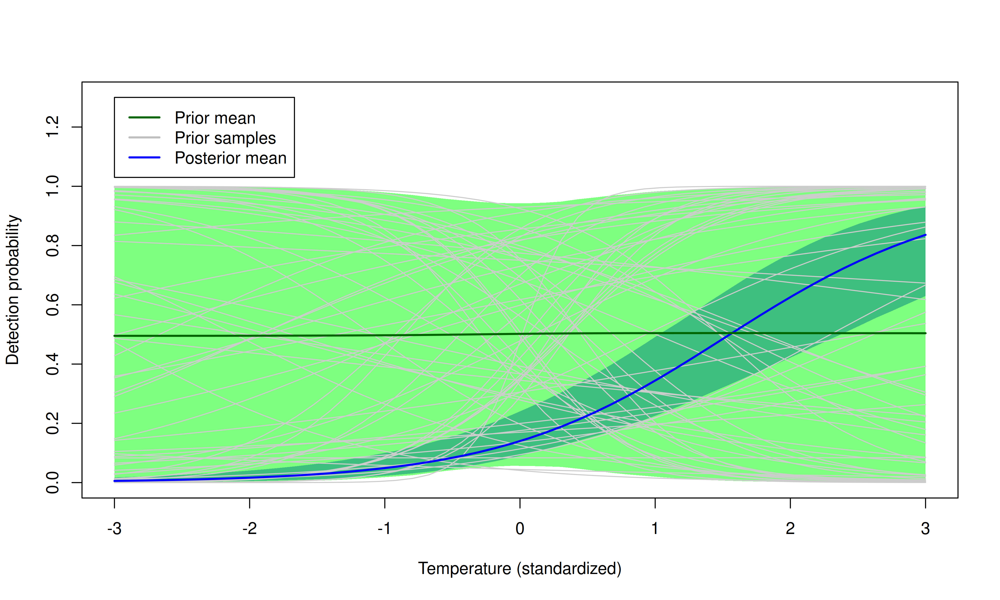

Binomial \(N\)-mixture models:
simulation, fitting, and prediction
WILD(FISH) 8390
Inference for Models of Fish and Wildlife Population Dynamics
We’re often more interested in abundance than occupancy.
Even if you’re interested in occupancy, you get it for free by modeling abundance.
Occupancy isn’t useful if all sites are occupied.
Binomial \(N\)-mixture models are useful for studying spatial variation in abundance if we have repeated count data, instead of repeated detection data.
State model (with Poisson assumption) \[ \begin{gather*} \mathrm{log}(\lambda_i) = \beta_0 + \beta_1 {\color{blue} x_{i1}} + \beta_2 {\color{blue} x_{i2}} + \cdots \\ N_i \sim \mathrm{Poisson}(\lambda_i) \end{gather*} \]
Observation model \[ \begin{gather*} \mathrm{logit}(p_{ij}) = \alpha_0 + \alpha_1 {\color{blue} x_{i1}} + \alpha_2 {\color{Purple} w_{ij}} + \cdots \\ y_{ij} \sim \mathrm{Binomial}(N_i, p_{ij}) \end{gather*} \]
Definitions
\(\lambda_i\) – Expected value of abundance at site \(i\)
\(N_i\) – Realized value of abundance at site \(i\)
\(p_{ij}\) – Probability of detecting at site \(i\) on occasion \(j\)
\(y_{ij}\) – Count data
\(\color{blue} x_1\) and \(\color{blue} x_2\) – site covariates
\(\color{Purple} w\) – observation covariate
Detection probability and data
Data and latent abundance
Coefficients, \(\lambda\), and \(p\)
Simulate occupancy and detection data
Observations
unmarkedFrame Object
100 sites
Maximum number of observations per site: 4
Mean number of observations per site: 4
Sites with at least one detection: 45
Tabulation of y observations:
0 1 2 3
332 52 13 3
Site-level covariates:
forest
Hardwood:31
Mixed :32
Pine :37
Observation-level covariates:
temp
Min. :-3.229012
1st Qu.:-0.603218
Median :-0.019813
Mean :-0.001029
3rd Qu.: 0.663820
Max. : 3.001200 pcount is similar to occu, but there’s a new argument (K) that should be an integer much greater than the highest possible value of local abundance.
Call:
pcount(formula = ~1 ~ 1, data = umf, K = 100)
Abundance (log-scale):
Estimate SE z P(>|z|)
0.428 0.324 1.32 0.187
Detection (logit-scale):
Estimate SE z P(>|z|)
-1.8 0.384 -4.69 2.74e-06
AIC: 459.6769
Number of sites: 100Detection depends on temp. Abundance depends on forest.
Call:
pcount(formula = ~temp ~ forest, data = umf, K = 100)
Abundance (log-scale):
Estimate SE z P(>|z|)
(Intercept) -0.326 0.366 -0.891 0.372706
forestMixed -0.326 0.461 -0.706 0.480137
forestPine 1.207 0.336 3.595 0.000324
Detection (logit-scale):
Estimate SE z P(>|z|)
(Intercept) -1.96 0.313 -6.26 3.79e-10
temp 1.18 0.205 5.73 9.83e-09
AIC: 373.6761
Number of sites: 100Estimates should not change when you increase \(K\).
lam(Int) lam(forestMixed) lam(forestPine) p(Int) p(temp)
-0.3260 -0.3258 1.2073 -1.9615 1.1760 Looks good:
If the estimates do change, increase \(K\) until they stabilize.


Estimate of total abundance in sampled area, with 95% CI:
Create data.frame with prediction covariates.
Get predictions of \(\lambda\) for each row of prediction data.
model {
lambda ~ dunif(0, 20) # Expected value of abundance
p ~ dunif(0, 1) # Detection probability
for(i in 1:nSites) {
N[i] ~ dpois(lambda) # Latent local abundance
for(j in 1:nOccasions) {
y[i,j] ~ dbin(p, N[i]) # Data
}
}
totalAbundance <- sum(N)
}Put data in a named list
Initial values
Run it
model {
# Priors for occupancy coefficients
beta0 ~ dnorm(0, 0.5) # variance=1/0.5
beta1 ~ dnorm(0, 0.5)
beta2 ~ dnorm(0, 0.5)
# Priors for detection coefficients
alpha0 ~ dnorm(0, 0.5)
alpha1 ~ dnorm(0, 0.5)
for(i in 1:nSites) {
log(lambda[i]) <- beta0 + beta1*forestMixed[i] + beta2*forestPine[i]
N[i] ~ dpois(lambda[i]) # Latent local abundance
for(j in 1:nOccasions) {
logit(p[i,j]) <- alpha0 + alpha1*temp[i,j]
y[i,j] ~ dbin(p[i,j], N[i]) # Data
}
}
totalAbundance <- sum(N)
}Put data in a named list
Initial values
Parameters to monitor
Iterations = 101:2100
Thinning interval = 1
Number of chains = 3
Sample size per chain = 2000
1. Empirical mean and standard deviation for each variable,
plus standard error of the mean:
Mean SD Naive SE Time-series SE
beta0 -0.3929 0.3311 0.004274 0.03587
beta1 -0.4117 0.4693 0.006059 0.04957
beta2 1.1824 0.3124 0.004033 0.02593
alpha0 -1.8476 0.3007 0.003882 0.06867
alpha1 1.1899 0.1791 0.002313 0.02768
totalAbundance 121.1325 21.5948 0.278787 4.08153
2. Quantiles for each variable:
2.5% 25% 50% 75% 97.5%
beta0 -1.0624 -0.6132 -0.3849 -0.15200 0.1964
beta1 -1.3734 -0.7373 -0.3883 -0.05767 0.3914
beta2 0.6067 0.9652 1.1756 1.38706 1.8294
alpha0 -2.3059 -2.0827 -1.8788 -1.65230 -1.1511
alpha1 0.8120 1.0763 1.1949 1.31499 1.4999
totalAbundance 82.9750 106.0000 121.0000 135.00000 168.0000


First, extract the \(p\) coefficients
alpha0 alpha1
[1,] -1.168063 0.8492890
[2,] -1.159962 0.8759836
[3,] -1.175225 0.8804013
[4,] -1.161900 0.8326993Create prediction matrix, one row for each MCMC iteration.
Predict \(p\) for each MCMC iteration.
plot(temp.pred, p.post.pred[1,], type="l", xlab="Temperature (standardized)",
ylab="Detection probability", ylim=c(0, 1), col=gray(0.8))
for(i in seq(1, n.iter, by=10)) { ## Thin by 10
lines(temp.pred, p.post.pred[i,], col=gray(0.8)) }
pred.post.mean <- colMeans(p.post.pred)
pred.post.lower <- apply(p.post.pred, 2, quantile, prob=0.025)
pred.post.upper <- apply(p.post.pred, 2, quantile, prob=0.975)
lines(temp.pred, pred.post.mean, col="blue")
lines(temp.pred, pred.post.lower, col="blue", lty=2)
lines(temp.pred, pred.post.upper, col="blue", lty=2)
Questions: - What are the implied priors on \(\lambda\) and \(p\)? - What would be the consequence of changing the priors?
[Prior predictive checks] can help us answer these questions.
Prior prediction can be acheived by replacing the data with missing values.
Replace data with missing values
Fit model (Really, we’re just sampling from the prior)
Iterations = 1:2000
Thinning interval = 1
Number of chains = 3
Sample size per chain = 2000
1. Empirical mean and standard deviation for each variable,
plus standard error of the mean:
Mean SD Naive SE Time-series SE
alpha0 0.007463 1.421 0.01834 0.01834
alpha1 0.024058 1.421 0.01834 0.01834
beta0 0.020227 1.428 0.01843 0.01843
beta1 -0.028018 1.407 0.01817 0.01849
beta2 0.004004 1.385 0.01788 0.01741
totalAbundance 656.964833 3695.473 47.70835 54.55638
2. Quantiles for each variable:
2.5% 25% 50% 75% 97.5%
alpha0 -2.817 -0.9272 7.988e-06 0.9552 2.810
alpha1 -2.774 -0.9289 1.398e-02 0.9771 2.907
beta0 -2.820 -0.9271 1.605e-02 0.9904 2.796
beta1 -2.762 -0.9652 -5.384e-02 0.9541 2.794
beta2 -2.680 -0.9270 -1.162e-02 0.9524 2.716
totalAbundance 5.000 50.0000 1.440e+02 437.0000 4136.425Push the prior samples through the model to predict \(p\)
Compute prior mean and 95% CI for \(p\) predictions
Show credible regions using shaded polygons. Include a few prior prediction lines.
plot(temp.pred, p.post.pred[1,], type="n", xlab="Temperature (standardized)",
ylab="Detection probability", ylim=c(0, 1.3), col=gray(0.8))
polygon(x=c(temp.pred, rev(temp.pred)),
y=c(pred.post.lower, rev(pred.post.upper)),
col=rgb(0,0,1,0.5), border=NA) # Post CI
polygon(x=c(temp.pred, rev(temp.pred)),
y=c(pred.prior.lower, rev(pred.prior.upper)),
col=rgb(0,1,0,0.5), border=NA) # Prior CI
for(i in seq(1, n.iter, by=100)) { ## Thin by 100
lines(temp.pred, p.prior.pred[i,], col=gray(0.8)) } # Prior preds
lines(temp.pred, pred.post.mean, col="blue", lwd=2)
lines(temp.pred, pred.prior.mean, col="darkgreen", lwd=2)
legend(-3, 1.3, c("Prior mean", "Prior samples", "Posterior mean"),
col=c("darkgreen", "grey", "blue"), lwd=2)
There are two common strategies for specifying priors: * Use uniform/flat priors to obtain results that will often be similar to likelihood-based methods. * Use priors that reflect available information.
The second approach can be used even if there isn’t much prior information available. Priors can allow for the possibility of being ``surprised’’ by the data, but without putting most of the prior weight on extreme values.
Often, highly diffuse priors on the link scale result in most of the prior weight being on extreme values on the natural scale.
Prior predictive checks can be used to assess this possibility, and should be a standard component of Bayesian analysis.
Create a self-contained R script or Rmarkdown/Quarto file to do the following:
Using the simulated data, compare the prior and posterior predictive distributions of \(\lambda\) for each of the 3 forest types. 1
Upload your .R, .Rmd, or .qmd file to ELC by 5:00 PM on Tuesday.